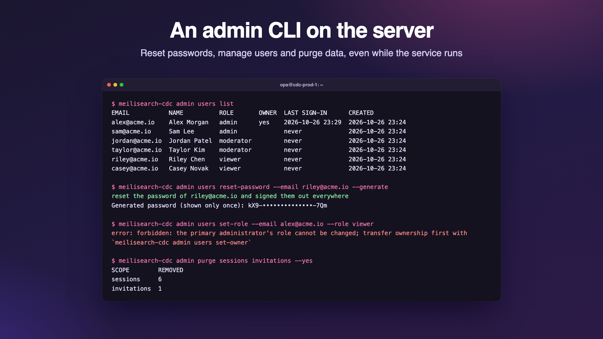

Admin CLI
meilisearch-cdc admin is the operator CLI, run on the server: recover accounts, transfer the primary administrator, sign everyone out, turn MCP off, and purge stored data. It uses the same binary as the service.

Usage
$ meilisearch-cdc admin --help
Usage: meilisearch-cdc admin [config flags] <command> [flags]
Operator commands, run on the server. They go through the running service
(its admin socket <data-dir>/admin.sock) or, while it is stopped, work on
the data directory directly. Every command is recorded in the audit log
with the actor "cli".
Commands:
users list list accounts
users create add an account
users reset-password set a new password and sign the user out everywhere
users set-role change an account's role
users set-owner make an admin the primary administrator
users delete delete an account and its sessions
sessions revoke sign one user, or everyone, out
mcp disable turn the MCP server off (tokens and policy stay)
mcp revoke-tokens revoke every MCP token
purge <scope>... permanently delete stored data
Config flags are the service's own, with the same environment variables, so
the CLI finds the same data directory and key: -data-dir (CDC_DATA_DIR),
-secret-key (CDC_SECRET_KEY), -meili-url (MEILI_URL), ...
-json print machine readable JSON
Run "meilisearch-cdc admin <command> --help" for a command's flags.Config flags go before the command; -json may go before or after it. The exit code is 0 on success, 1 when the command failed and 2 for usage errors. meilisearch-cdc without admin runs the service.
How it reaches the data
| Situation | What happens |
|---|---|
| The service is running | The CLI sends the command to the service's Unix socket <data-dir>/admin.sock (mode 0600, removed on shutdown), and the running service applies it: a purge stops the affected tasks cleanly and dashboards see the change at once. File permissions are the authorization: whoever can open the socket can read the data directory anyway. |
| The service is stopped | The CLI opens cdc.db itself and runs the same code. |
| The database is locked but nothing answers on the socket | The CLI stops with … is locked by a running service that does not answer on … (an older version, or the socket could not be created; see its log): stop the service and retry. |
The CLI reads the service's configuration (flags and environment variables), so give it the same CDC_DATA_DIR, and the same CDC_SECRET_KEY if the service does not use the generated secret.key. Without a key it refuses to open the data directory, and without a database it says no database at data/cdc.db: check -data-dir (CDC_DATA_DIR); the service must have started once.
CDC_DATA_DIR=/var/lib/meilisearch-cdc meilisearch-cdc admin users list
CDC_SECRET_KEY_FILE=/run/secrets/cdc-key meilisearch-cdc admin -data-dir /var/lib/meilisearch-cdc users list
docker exec -it cdc meilisearch-cdc admin users list
kubectl -n cdc exec -it deploy/meilisearch-cdc -- meilisearch-cdc admin users listSocket path length
Unix socket paths are limited to about 100 characters. With a longer data directory path the service logs admin socket unavailable and runs without it. In our test on macOS the CLI then failed even while the service was stopped (connect to the admin socket …: connect: invalid argument). Keep the data directory path short, or run the CLI from inside the directory: cd /very/long/path && CDC_DATA_DIR=. meilisearch-cdc admin ….
Commands
| Command | Flags | What it does |
|---|---|---|
users list | Accounts, oldest first, with the primary administrator marked. | |
users create | --email (required), --name (default: the part of the email before @), --role (viewer by default), password flags | Add an account. The first admin of an empty installation becomes the primary administrator. |
users reset-password | --email, password flags | Set a new password and sign the user out everywhere. Works for the primary administrator too. |
users set-role | --email, --role (both required) | Change a role. The primary administrator's role cannot change, and the last admin cannot be demoted. |
users set-owner | --email | Make an admin the primary administrator. |
users delete | --email | Delete an account and its sessions. Not the primary administrator, not the last admin. |
sessions revoke | --email (optional) | Sign one user out, or everyone without --email. |
mcp disable | Turn the MCP server off; tokens and the policy stay. | |
mcp revoke-tokens | Revoke every MCP token. | |
purge <scope>… | --yes, --indexes | Delete stored data; see Purge. |
Every command also accepts -json. Passwords for users create and users reset-password (8 to 128 characters):
--generatecreates a strong random password and prints it once;--password-file Freads it from a file (-for standard input);- otherwise, on a terminal, a prompt asks twice without echo; with standard input redirected (and always on Windows), its first line is used.
Help of one command
$ meilisearch-cdc admin users create --help
Usage: meilisearch-cdc admin users create [flags]
Add an account.
Creates an account. The first admin of an empty installation becomes the
primary administrator.
The password comes from --password-file, --generate, or a prompt (asked
twice, not echoed) when stdin is a terminal; otherwise the first line of
stdin is used. Passwords have 8 to 128 characters.
Flags:
-email string
the account's email address (required)
-generate
generate a strong random password and print it once
-json
print machine readable JSON
-name string
display name (default: the part of the email before @)
-password-file string
read the password from this file (- for stdin)
-role string
viewer, moderator or admin (default "viewer")Example session
Real output (passwords shortened):
$ meilisearch-cdc admin users list
No users: the dashboard shows the setup page.
$ meilisearch-cdc admin users create --email owner@example.com --name Administrator --role admin --generate
created owner@example.com (admin) as the primary administrator
Generated password (shown only once): AhRWasEcShykjavJ1uBg…
$ meilisearch-cdc admin users create --email ops@example.com --role admin --generate
created ops@example.com (admin)
Generated password (shown only once): goKSegGfcxHwW65dOo7Q…
$ meilisearch-cdc admin users create --email viewer@example.com --name Vera --generate
created viewer@example.com (viewer)
Generated password (shown only once): ArbMHpOz8BY-1ToWQWzu…
$ meilisearch-cdc admin users list
EMAIL NAME ROLE OWNER LAST SIGN-IN CREATED
owner@example.com Administrator admin yes never 2026-10-26 23:42
ops@example.com ops admin never 2026-10-26 23:42
viewer@example.com Vera viewer never 2026-10-26 23:42
$ meilisearch-cdc admin users set-role --email owner@example.com --role viewer
error: forbidden: the primary administrator's role cannot be changed; transfer ownership first with `meilisearch-cdc admin users set-owner`
$ meilisearch-cdc admin users delete --email owner@example.com
error: forbidden: the primary administrator cannot be deleted; transfer ownership first with `meilisearch-cdc admin users set-owner`
$ meilisearch-cdc admin users set-owner --email viewer@example.com
error: conflict: the primary administrator must be an admin; viewer@example.com is a viewer
$ meilisearch-cdc admin users set-owner --email ops@example.com
ops@example.com is now the primary administrator
$ meilisearch-cdc admin sessions revoke --email viewer@example.com
revoked 0 sessions of viewer@example.com
$ meilisearch-cdc admin sessions revoke
revoked 0 sessions: everyone is signed out
$ meilisearch-cdc admin mcp disable
the MCP server is disabled; tokens and the policy are kept
$ meilisearch-cdc admin mcp revoke-tokens
revoked 0 MCP tokens
$ printf 'short\n' | meilisearch-cdc admin users reset-password --email viewer@example.com
error: password must be 8 to 128 characters
$ meilisearch-cdc admin users reset-password --email viewer@example.com --generate
reset the password of viewer@example.com and signed them out everywhere
Generated password (shown only once): Q-GZlarCaf9cHosL7buK…With -json:
{
"users": [
{
"id": "74e7560236f73f46",
"email": "ops@example.com",
"name": "ops",
"role": "admin",
"createdAt": "2026-10-26T20:12:00.239497Z",
"updatedAt": "2026-10-26T20:12:00.542017Z",
"owner": true
}
]
}Every command, refused ones included, is recorded in the audit log with the user cli and the action cli.<command>, for example cli.users.reset-password. Passwords never are.
Purge
admin purge permanently deletes exactly the data of the scopes you name. It asks you to type purge unless --yes is given. Scopes run in this order:
| Scope | Deletes |
|---|---|
tasks | Every task with its checkpoint, status, dead letters and diff report; running tasks stop first. Meilisearch indexes stay unless --indexes is given, then each task's index is deleted on its destination (a task whose index cannot be deleted is kept and reported). Source resources such as replication slots are not dropped. |
checkpoints | Sync progress: every task runs a full snapshot on its next start. Running tasks restart now. |
dlq | Dead letters of every task. |
diffs | Diff reports; running diffs are cancelled. |
logs | The task activity log. It is kept in memory, so only a running service has one. |
connectors | Saved source connections. Refused while tasks exist, unless tasks is purged in the same command. |
destinations | Meilisearch destinations, with the same rule. With MEILI_URL set, its destination is recreated. |
alert-rules | Alert rules and their alert state; the history stays. |
alert-events | Alert history and alert state; rules stay. |
mcp-tokens | MCP bearer tokens. |
settings | SMTP, Telegram and the MCP settings (MCP is disabled and the default policy applies). |
sessions | Every sign-in session: everyone is signed out. |
invitations | Pending invitations. |
users | Every account with its sessions, invitations and password resets; the next visit shows the setup page (or CDC_ADMIN_EMAIL creates the admin on the next start). |
audit | The audit log. The purge itself is recorded afterwards. |
all | Everything: the data directory is as good as new, except that the secret key file stays. |
$ meilisearch-cdc admin purge dlq diffs alert-events --yes
SCOPE REMOVED
dlq 0
diffs 0
alert-events 0
$ meilisearch-cdc admin purge dlq
This permanently deletes from /var/lib/meilisearch-cdc:
dlq dead letters of every task
Type "purge" to confirm:
error: purge cancelled: nothing was deleted
$ meilisearch-cdc admin purge bogus --yes
error: unknown scope "bogus" (tasks, checkpoints, dlq, diffs, logs, connectors, destinations, alert-rules, alert-events, mcp-tokens, settings, sessions, invitations, users, audit or all)
Run "meilisearch-cdc admin purge --help" for usage.Purge is not available in the REST API: it is a destructive, server-side operator action.
Recovery recipes
Forgot the admin password
meilisearch-cdc admin users list # find the email
meilisearch-cdc admin users reset-password --email admin@example.com --generateThis works for the primary administrator too, and signs the user out everywhere.
Locked out of the dashboard
- Too many failed sign-ins (
429): wait 15 minutes, or restart the service, which clears the in-memory rate limits. - No admin left you can sign in as: create one with
users create --email you@example.com --role admin --generate, or promote an account withusers set-role --email you@example.com --role admin. - Every session must go (a lost device, a leaked cookie):
sessions revoke, then rotateCDC_ADMIN_TOKENandmcp revoke-tokensif they may be exposed too.
Transfer ownership
meilisearch-cdc admin users set-role --email new-owner@example.com --role admin # if not admin yet
meilisearch-cdc admin users set-owner --email new-owner@example.com
meilisearch-cdc admin users set-role --email old-owner@example.com --role viewer # now allowedWipe and start over
meilisearch-cdc admin purge all # asks you to type "purge"
meilisearch-cdc admin purge tasks --indexes --yes # tasks and their Meilisearch indexes onlyAfter purge all the next visit shows the setup page. Drop replication slots in your databases yourself (see PostgreSQL), since purging does not touch sources. To also discard the encryption key, stop the service and delete the whole data directory instead.